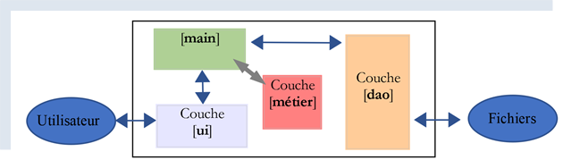
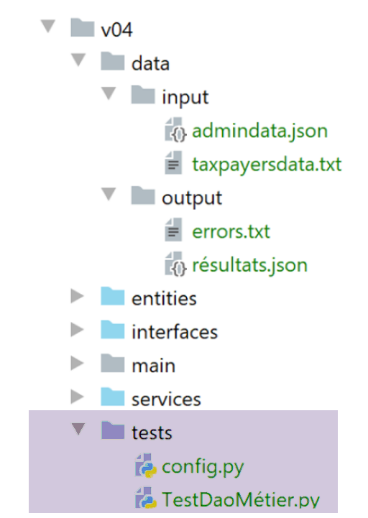

15. تمرين تطبيقي - الإصدار 4

نستأنف هنا التمرين الموصوف في الفقرة |الإصدار 3| ونعالجه الآن باستخدام الفئات والواجهات. سنكتب تطبيقين:
سيكون التطبيق 1 كما يلي:

سيقوم البرنامج النصي الرئيسي [main] بإنشاء مثيل لطبقة [dao] وطبقة [métier]:
- ستكون مهمة الطبقة [dao] إدارة البيانات المخزنة في ملفات نصية ثم لاحقًا في قاعدة بيانات؛
- وستكون مهمة الطبقة [métier] هي حساب الضريبة؛
في هذا التطبيق، لن تكون هناك أي إجراءات من جانب المستخدم: سيتم العثور على بيانات دافعي الضرائب في ملف نصي سيُسمى الوحدة النمطية [main].
في التطبيق 2، سيقوم المستخدم بإدخال بيانات دافعي الضرائب عبر لوحة المفاتيح. وستتطور البنية عندئذٍ على النحو التالي:

- تتولى الطبقة [dao] (كائن الوصول إلى البيانات) الوصول إلى البيانات الخارجية
- الطبقة [métier] تتولى معالجة المشكلات المتعلقة بالأنشطة التجارية، وهي في هذه الحالة حساب الضريبة. وهي لا تتعامل مع البيانات. ويمكن أن تكون هذه البيانات من مصدرين:
- الطبقة [dao] للبيانات الدائمة؛
- الطبقة [ui] للبيانات التي يقدمها المستخدم.
- الطبقة [ui] (واجهة المستخدم) تتولى التفاعلات مع المستخدم؛
- [main] هي الطبقة المنسقة؛
فيما يلي، سيتم تنفيذ كل من الطبقات [dao] و[métier] و[ui] باستخدام فئة واحدة. وستكون الطبقتان [métier] و [dao] متطابقتين في كلا التطبيقين. ولهذا السبب تم دمجهما في نفس إصدار التمرين التطبيقي.
15.1. الإصدار 4 – التطبيق 1
يحسب الإصدار 4 الضريبة على قائمة من دافعي الضرائب موجودة في ملف نصي. وله البنية التالية:

15.1.1. الكيانات

الكيانات هي فئات بيانات. وتتمثل مهمتها في تغليف البيانات وتوفير وظائف الحصول على القيم (getters) وتعيين القيم (setters) التي تسمح بالتحقق من صحة تلك البيانات. يتم تبادل الكيانات بين الطبقات. يمكن لنفس الكيان أن ينتقل من الطبقة [ui] إلى الطبقة [dao] والعكس صحيح.
15.1.1.1. الفئة [ImpôtsError]
سنستخدم فئة استثناء خاصة:
# -------------------------------
# فئة الاستثناءات
from MyException import MyException
class ImpôtsError(MyException):
pass
بمجرد أن تواجه الطبقتان [métier] و [dao] مشكلة، ستقومان بإطلاق هذا الاستثناء. وهي مشتقة من الفئة [MyException]. وبالتالي، يتم استخدامها على النحو التالي: [raise ImpôtsError(code_erreur, msg_erreur)].
15.1.1.2. الفئة [AdminData]
تضم الفئة [AdminData] الثوابت المستخدمة في حساب الضريبة:
from BaseEntity import BaseEntity
# بيانات مصلحة الضرائب
class AdminData(BaseEntity):
# المفاتيح المستبعدة من حالة الفئة
excluded_keys = []
# المفاتيح المسموح بها
@staticmethod
def get_allowed_keys() -> list:
return [
"limites",
"coeffr",
"coeffn",
"plafond_qf_demi_part",
"plafond_revenus_celibataire_pour_reduction",
"plafond_revenus_couple_pour_reduction",
"valeur_reduc_demi_part",
"plafond_decote_celibataire",
"plafond_decote_couple",
"plafond_impot_couple_pour_decote",
"plafond_impot_celibataire_pour_decote",
"abattement_dixpourcent_max",
"abattement_dixpourcent_min"
]
- السطر 5: الفئة [AdminData] تمتد من الفئة [BaseEntity] الموصوفة في الفقرة |BaseEntity|. نتذكر أن الفئات التي تمتد من الفئة [BaseEntity] يجب أن تحدد:
- سمة للفئة [excluded_keys] (السطر 7) تسرد خصائص الكائن المستبعدة عند تحويل الكائن إلى قاموس؛
- طريقة ثابتة [get_allowed_keys] (الأسطر 10-26) التي تُرجع قائمة بالخصائص المقبولة عند تهيئة الكائن باستخدام قاموس؛
لم يتم استخدام مُعيِّنات (setters) للتحقق من صحة البيانات المستخدمة لتهيئة كائن [AdminData]. في الواقع، هذا الكائن فريد ومُعرَّف حسب التكوين، وبالتالي لا يحتمل أن يكون خاطئًا.
15.1.1.3. الفئة [TaxPayer]
ستقوم الفئة [TaxPayer] بنمذجة دافع الضرائب:
# عمليات الاستيراد
from BaseEntity import BaseEntity
from ImpôtsError import ImpôtsError
# أحد المكلفين
class TaxPayer(BaseEntity):
# نموذج دافع الضرائب
# المعرف: رقم التعريف
# متزوج: نعم / لا
# الأطفال: عدد أطفاله
# الراتب: راتبه السنوي
# الضريبة: مبلغ الضريبة المستحقة
# الزيادة: الزيادة في الضريبة المستحقة
# الخصم: مبلغ الخصم من الضريبة المستحقة
# التخفيض: التخفيض على الضريبة المستحقة
# المعدل: معدل الضريبة المطبق على المكلف
# المفاتيح المستبعدة من قائمة الفئة
excluded_keys = []
# المفاتيح المسموح بها
@staticmethod
def get_allowed_keys() -> list:
return ['id', 'marié', 'enfants', 'salaire', 'impôt', 'surcôte', 'décôte', 'réduction', 'taux']
# الخصائص
@property
def marié(self) -> str:
return self.__marié
@property
def enfants(self) -> int:
return self.__enfants
@property
def salaire(self) -> int:
return self.__salaire
@property
def impôt(self) -> int:
return self.__impôt
@property
def surcôte(self) -> int:
return self.__surcôte
@property
def décôte(self) -> int:
return self.__décôte
@property
def réduction(self) -> int:
return self.__réduction
@property
def taux(self) -> float:
return self.__taux
# أدوات التعيين
@marié.setter
def marié(self, marié: str):
ok = isinstance(marié, str)
if ok:
marié = marié.strip().lower()
ok = marié == "oui" or marié == "non"
if ok:
self.__marié = marié
else:
raise ImpôtsError(31, f"l'attribut marié [{marié}] doit avoir l'une des valeurs oui / non")
@enfants.setter
def enfants(self, enfants):
# يجب أن يكون عدد الأبناء عددًا صحيحًا >=0
try:
enfants = int(enfants)
erreur = enfants < 0
except:
erreur = True
if not erreur:
self.__enfants = enfants
else:
raise ImpôtsError(32, f"L'attribut enfants [{enfants}] doit être un entier >=0")
@salaire.setter
def salaire(self, salaire):
# الراتب يجب أن يكون عددًا صحيحًا >=0
try:
salaire = int(salaire)
erreur = salaire < 0
except:
erreur = True
if not erreur:
self.__salaire = salaire
else:
raise ImpôtsError(33, f"L'attribut salaire [{salaire}] doit être un entier >=0")
@impôt.setter
def impôt(self, impôt):
# الضريبة يجب أن تكون عددًا صحيحًا >=0
try:
impôt = int(impôt)
erreur = impôt < 0
except:
erreur = True
if not erreur:
self.__impôt = impôt
else:
raise ImpôtsError(34, f"L'attribut impôt [{impôt}] doit être un nombre >=0")
@décôte.setter
def décôte(self, décôte):
# يجب أن يكون الخصم عددًا صحيحًا >=0
try:
décôte = int(décôte)
erreur = décôte < 0
except:
erreur = True
if not erreur:
self.__décôte = décôte
else:
raise ImpôtsError(35, f"L'attribut décôte [{décôte}] doit être un nombre >=0")
@surcôte.setter
def surcôte(self, surcôte):
# يجب أن تكون الزيادة عددًا صحيحًا >=0
try:
surcôte = int(surcôte)
erreur = surcôte < 0
except:
erreur = True
if not erreur:
self.__surcôte = surcôte
else:
raise ImpôtsError(36, f"L'attribut surcôte [{surcôte}] doit être un nombre >=0")
@réduction.setter
def réduction(self, réduction):
# يجب أن تكون الزيادة عددًا صحيحًا >=0
try:
réduction = int(réduction)
erreur = réduction < 0
except:
erreur = True
if not erreur:
self.__réduction = réduction
else:
raise ImpôtsError(37, f"L'attribut réduction [{réduction}] doit être un nombre >=0")
@taux.setter
def taux(self, taux):
# يجب أن يكون المعدل عددًا حقيقيًا >=0
try:
taux = float(taux)
erreur = taux < 0
except:
erreur = True
if not erreur:
self.__taux = taux
else:
raise ImpôtsError(38, f"L'attribut taux [{taux}] doit être un nombre >=0")
ملاحظات:
- تحتوي الفئة [TaxPayer] على دافع ضرائب؛
- السطر 7: الفئة [TaxPayer] مشتقة من الفئة [BaseEntity]. ولذلك فإن لها معرّفًا هو [id]؛
- السطر 20: لا توجد أي خاصية مستبعدة من حالة كائن [AdminData]؛
- الأسطر 22-25: خصائص الفئة. وقد تم توضيحها في الأسطر 9-17؛
- الأسطر 27-58: دالات الحصول (getters) لسمات الفئة؛
- الأسطر 60-161: دوال التعيين لسمات الفئة. تجدر الإشارة إلى أن ميزة الفئة التي تغلف البيانات مقارنةً بقاموس بسيط هي أن الفئة يمكنها التحقق من صحة خصائصها بفضل دوال التعيين الخاصة بها؛
15.1.2. الطبقة [dao]
سنجمع تطبيقات الطبقات في مجلد [services]. وستقوم هذه الفئات بتنفيذ الواجهات المحددة في المجلد [interfaces].

15.1.2.1. الواجهة [InterfaceImpôtsDao]
ستقوم الطبقة [dao] بتنفيذ الواجهة [InterfaceImpôtsDao] التالية (الملف InterfaceImpôtsDao.py):
# الواردات
from abc import ABC, abstractmethod
# واجهة IImpôtsDao
from AdminData import AdminData
class InterfaceImpôtsDao(ABC):
# قائمة شرائح الضريبة
@abstractmethod
def get_admindata(self) -> AdminData:
pass
# قائمة بيانات دافعي الضرائب
@abstractmethod
def get_taxpayers_data(self) -> dict:
pass
# تسجيل نتائج حساب الضريبة
@abstractmethod
def write_taxpayers_results(self, taxpayers_results: list):
pass
تحدد الواجهة ثلاث طرق:
- [get_admindata]: هي الطريقة التي تحصل على مصفوفة شرائح الضرائب. تجدر الإشارة إلى أنه لم يتم تقديم أي معلومات حول كيفية الحصول على هذه البيانات. في ما يلي، سيتم العثور عليها أولاً في ملف نصي ثم في قاعدة بيانات. وسيكون على الفئات التي تنفذ الواجهة التكيف مع طريقة تخزين البيانات. وبالتالي، سيكون لدينا فئة لاسترداد شرائح الضرائب من ملف نصي وأخرى لاستردادها من قاعدة بيانات. وستقوم كلتا الفئتين بتنفيذ الطريقة [get_admindata]؛
- [get_taxpayers_data]: هي الطريقة التي تحصل على بيانات دافعي الضرائب. ومرة أخرى، لا نحدد مكان وجود هذه البيانات. وسنتناول فقط الحالة التي تكون فيها البيانات موجودة في ملف نصي؛
- [write_taxpayers_results]: هي الطريقة التي ستقوم بتخزين نتائج حساب الضريبة. لم نحدد مكان التخزين. سنقتصر على الحالة التي يتم فيها تخزين النتائج في ملف نصي. وسيكون المعامل [taxpayers_results] هو قائمة النتائج المراد تخزينها؛
15.1.2.2. الفئة [AbstractImpôtsDao]
سيتم تنفيذ الطبقة [dao] بواسطة فئتين:
- إحداها ستقوم باستخراج البيانات (المكلفون، النتائج، شرائح الضريبة) من الملفات النصية؛
- والأخرى ستقوم باستخراج البيانات (المكلفون، النتائج) من ملفات نصية، والشرائح الضريبية من قاعدة بيانات؛
ولن تختلف الفئتان إلا في طريقة إدارة شرائح الضريبة. أما بيانات دافعي الضرائب ونتائج حسابات الضريبة، فستدار بنفس الطريقة. ولهذا السبب، سنقوم بإدارتها في فئة أم هي [AbstractImpôtsDao]. أما الخاصية المميزة لإدارة شرائح الضريبة، فستدار في فئتين تابعتين:
- ستقوم الفئة [ImpôtsDaoWithAdminDataInJsonFile] باسترداد شرائح الضريبة من ملف نصي بتنسيق jSON؛
- ستقوم الفئة [ImpôtsDaoWithAdminDataInDatabase] باستخراج شرائح الضريبة من قاعدة بيانات؛
وستكون الفئة الأم [AbstractImpôtsDao] كما يلي:
# البيانات المستوردة
import codecs
import json
from abc import abstractmethod
from AdminData import AdminData
from ImpôtsError import ImpôtsError
from InterfaceImpôtsDao import InterfaceImpôtsDao
from TaxPayer import TaxPayer
# فئة أساسية لطبقة [dao]
class AbstractImpôtsDao(InterfaceImpôtsDao):
# سيتم تخزين المكلفين وضرائبهم في ملفات نصية
# المنشئ
def __init__(self, config: dict):
# config[taxpayersFilename]: اسم الملف النصي الخاص بالمكلفين
# config[resultsFilename]: اسم ملف النتائج jSON
# config[errorsFilename]: اسم ملف الأخطاء
# يتم حفظ المعلمات
self.taxpayers_filename = config.get("taxpayersFilename")
self.taxpayers_results_filename = config.get("resultsFilename")
self.errors_filename = config.get("errorsFilename")
# ------------------
# واجهة IImpôtsDao
# ------------------
# قائمة بيانات دافعي الضرائب
def get_taxpayers_data(self) -> dict:
…
# تسجيل ضرائب المكلفين
def write_taxpayers_results(self, taxpayers: list):
…
# قراءة شرائح الضريبة
@abstractmethod
def get_admindata(self) -> AdminData:
pass
-
السطر 13: الفئة [AbstractImpôtsDao] تُنفذ الواجهة [InterfaceImpôtsDao]. ولذلك نجد الطرق الثلاث لهذه الواجهة:
- [get_taxpayers_data]: السطر 31؛
- [write_taxpayers_results]: السطر 35؛
- [get_admindata]: السطر 40. لن يتم تنفيذ هذه الطريقة بواسطة الفئة [AbstractImpôtsDao]، لذا تم إعلانها على أنها طريقة مجردة (السطر 39)؛
-
السطر 16: يتلقى المنشئ قاموسًا [config] يحتوي على المعلومات التالية:
- [taxpayersFilename]: اسم الملف النصي الذي يحتوي على بيانات دافعي الضرائب؛
- [resultsFilename]: اسم الملف النصي الذي ستُخزَّن فيه النتائج؛
- [errorsFilename]: اسم الملف النصي الذي يسرد الأخطاء التي تمت مواجهتها أثناء معالجة الملف [taxpayersFilename]؛
الطريقة [get_taxpayers_data] هي كما يلي:
# قائمة بيانات دافعي الضرائب
def get_taxpayers_data(self) -> dict:
# عمليات التهيئة
taxpayers_data = []
datafile = None
erreurs = []
try:
# فتح ملف البيانات
datafile = open(self.taxpayers_filename, "r")
# معالجة السطر الحالي من الملف
ligne = datafile.readline()
# رقم السطر
numligne = 0
while ligne != '':
# سطر +
numligne += 1
# إزالة المسافات
ligne = ligne.strip()
# تجاهل الأسطر الفارغة والتعليقات
if ligne != "" and ligne[0] != "#":
try:
# استخراج الحقول الأربعة id، marié، enfants، salaire التي تشكل سطر المكلف
(id, marié, enfants, salaire) = ligne.split(",")
# يتم إنشاء سجل جديد TaxPayer
taxpayers_data.append(
TaxPayer().fromdict({'id': id, 'marié': marié, 'enfants': enfants, 'salaire': salaire}))
except BaseException as erreur:
# يتم تسجيل الخطأ
erreurs.append(f"Ligne {numligne}, {erreur}")
# يتم قراءة سطر جديد للمكلف
ligne = datafile.readline()
# يتم تسجيل الأخطاء إن وجدت
if erreurs:
text = f"Analyse du fichier {self.taxpayers_filename}\n\n" + "\n".join(erreurs)
with codecs.open(self.errors_filename, "w", "utf-8") as fd:
fd.write(text)
# يتم إرجاع النتيجة
return {"taxpayers": taxpayers_data, "erreurs": erreurs}
except BaseException as erreur:
# يتم إثارة استثناء ImpôtsError
raise ImpôtsError(11, f"{erreur}")
finally:
# يتم إغلاق الملف
if datafile:
datafile.close()
- السطر 4: سيتم وضع بيانات دافعي الضرائب (الحالة الاجتماعية، عدد الأبناء، الراتب) في قائمة كائنات من النوع [TaxPayer]؛
- السطران 8-9: يتم فتح ملف النص الخاص بالمكلفين في وضع القراءة. ويكون محتواه على النحو التالي:
بالمقارنة مع الإصدارات السابقة:
- يبدأ كل سطر في الملف [taxpayersFilename] بمعرف المكلف، وهو رقم بسيط؛
- يُسمح بالتعليقات والأسطر الفارغة؛
- سنقوم بمعالجة الأخطاء. وبالتالي، يجب الإبلاغ عن الأسطر 17 و19 و21 على أنها خاطئة. يتم تسجيل الأخطاء في ملف منفصل؛
لنواصل فحص الكود:
- السطر 4: يتم نقل بيانات الملف النصي إلى القائمة [taxPayersData]؛
- الأسطر 14-31: يتم قراءة ملف دافعي الضرائب سطراً سطراً؛
- السطر 14: يتم الوصول إلى نهاية الملف عند قراءة سطر فارغ (لا شيء — ولا حتى علامة نهاية السطر \r\n)؛
- السطر 20: يتم تجاهل الأسطر الفارغة والتعليقات. ويُعتبر السطر تعليقًا إذا كان الحرف الأول هو الحرف #، بعد إزالة المسافات البيضاء الموجودة قبل النص وبعده؛
- السطر 24: يتكون السطر الصحيح من أربعة حقول مفصولة بفاصلة. يتم استرداد هذه الحقول. تفشل عملية تعيين البيانات إلى مجموعة مكونة من أربعة عناصر إذا لم يتم تعيين أربعة عناصر بالضبط؛
- السطر 25: إذا كان أحد الحقول الأربعة المستردة [id, marié, enfants, salaire] غير صالح، فستقوم الطريقة [BaseEntity.fromdict] بإطلاق استثناء من النوع [MyException]؛
- السطران 25-26: تتم إضافة كائن [TaxPayer] إلى قائمة [taxpayers_data] الخاصة بالمكلفين؛
- الأسطر 27-29: يتم تجميع الأخطاء المحتملة في قائمة [erreurs]. تم إنشاء هذه القائمة في السطر 6؛
- الأسطر 33-36: يتم تسجيل قائمة الأخطاء التي تمت مواجهتها في الملف النصي [errorsFilename]. وهي من نوعين:
- لم يكن لسطر ما العدد الصحيح من الحقول المتوقعة؛
- كانت المعلومات الواردة في السطر خاطئة، مما أدى إلى فشل إنشاء كائن [TaxPayer]؛
- الأسطر 39-41: يتم اعتراض أي خطأ (BaseException) وإرساله إلى المستوى الأعلى عن طريق تغليفه في نوع [ImpôtsError]؛
- الأسطر 42-45: في جميع الحالات، سواء نجحت العملية أو فشلت، يتم إغلاق ملف النص الخاص بالمكلفين إذا كان مفتوحًا؛
يجب أن تنتج الطريقة [write_taxpayers_results] ملفًا jSON بالصيغة التالية:
[
{
"id": 1,
"marié": "oui",
"enfants": 2,
"salaire": 55555,
"impôt": 2814,
"surcôte": 0,
"taux": 0.14,
"décôte": 0,
"réduction": 0
},
{
"id": 2,
"marié": "oui",
"enfants": 2,
"salaire": 50000,
"impôt": 1384,
"surcôte": 0,
"taux": 0.14,
"décôte": 384,
"réduction": 347
},
{
"id": 3,
"marié": "oui",
"enfants": 3,
"salaire": 50000,
"impôt": 0,
"surcôte": 0,
"taux": 0.14,
"décôte": 720,
"réduction": 0
},
…
]
الطريقة [write_taxpayers_results] هي كما يلي:
# تسجيل ضرائب المكلفين
def write_taxpayers_results(self, taxpayers: list):
# تسجيل النتائج في ملف jSON
# المكلفون: قائمة العناصر من النوع TaxPayer
# (المعرّف، متزوج، أطفال، الراتب، الضريبة، الزيادة، التخفيض، التخفيض، المعدل)
# يتم تسجيل القائمة [taxpayers] في الملف النصي [self.taxpayers_results_filename]
file = None
try:
# فتح ملف النتائج
file = codecs.open(self.taxpayers_results_filename, "w", "utf8")
# إنشاء القائمة المراد تسلسلها في jSON
mapping = map(lambda taxpayer: taxpayer.asdict(), taxpayers)
# التسلسل jSON
json.dump(list(mapping), file, ensure_ascii=False)
except BaseException as erreur:
# إعادة إرسال الخطأ بنوع آخر
raise ImpôtsError(12, f"{erreur}")
finally:
# إغلاق الملف إذا كان مفتوحًا
if file:
file.close()
- السطر 2: تتلقى الطريقة قائمة بالمكلفين [taxpayers] التي يجب عليها تسجيلها في الملف النصي [self.taxpayers_results_filename] بتنسيق jSON؛
- السطر 10: إنشاء ملف النتائج UTF-8؛
- السطر 12: ندرج هنا الدالة [map] التي تكون صيغتها هنا [map (fonction, liste1)]. يتم تطبيق الدالة [fonction] على كل عنصر من عناصر [liste1] وتنتج عنصرًا جديدًا يُضاف إلى قائمة [liste2]. وأخيرًا، لكل i:
liste2[i]=fonction(liste1[i])
هنا، [liste1] هي القائمة [taxPayers]، وهي قائمة من الكائنات من النوع [TaxPayer]. يتم التعبير عن الدالة [fonction] هنا في شكل دالة تُسمى [lambda]، والتي تعبر عن التحويل الذي يتم إجراؤه على عنصر [taxpayer] من القائمة [taxpayers]: يتم استبدال كل عنصر [taxpayer] بقاموسه [taxpayer.asdict()]. وأخيرًا، فإن القائمة [liste2] الناتجة هي قائمة قواميس عناصر القائمة [taxpayers]؛
- السطر 12: النتيجة التي تُرجعها الدالة [map] ليست القائمة [liste2] بل كائن من النوع [map]. للحصول على [liste2]، يجب استخدام التعبير [list(mapping)] (السطر 14)؛
- السطر 14: يتم تسجيل القائمة [liste2] بتنسيق jSON في الملف [self.taxpayers_results_filename]؛
- الأسطر 15-17: يتم اعتراض أي نوع من الاستثناءات وتغليفها في خطأ من النوع [ImpôtsError] قبل إعادة تشغيلها (السطر 17)؛
- الأسطر 19-21: في جميع الحالات، سواء نجحت العملية أم فشلت، يتم إغلاق ملف النتائج إذا كان قد تم فتحه؛
15.1.2.3. الفئة [ImpôtsDaoWithAdminDataInJsonFile]
ستشتق الفئة [ImpôtsDaoWithAdminDataInJsonFile] من الفئة [AbstractImpôtsDao] وستنفذ الطريقة [getAdminData] التي لم تنفذها الفئة الأم. وستقوم هذه الفئة باسترداد بيانات مصلحة الضرائب من ملف jSON:
{
"limites": [9964, 27519, 73779, 156244, 0],
"coeffr": [0, 0.14, 0.3, 0.41, 0.45],
"coeffn": [0, 1394.96, 5798, 13913.69, 20163.45],
"plafond_qf_demi_part": 1551,
"plafond_revenus_celibataire_pour_reduction": 21037,
"plafond_revenus_couple_pour_reduction": 42074,
"valeur_reduc_demi_part": 3797,
"plafond_decote_celibataire": 1196,
"plafond_decote_couple": 1970,
"plafond_impot_couple_pour_decote": 2627,
"plafond_impot_celibataire_pour_decote": 1595,
"abattement_dixpourcent_max": 12502,
"abattement_dixpourcent_min": 437
}
الفئة [ImpôtsDaoWithAdminDataInJsonFile] هي كما يلي:
# عمليات الاستيراد
import codecs
import json
from AbstractImpôtsDao import AbstractImpôtsDao
from AdminData import AdminData
from ImpôtsError import ImpôtsError
# تنفيذ لطبقة [dao] حيث توجد بيانات مصلحة الضرائب في ملف jSON
class ImpôtsDaoWithAdminDataInJsonFile(AbstractImpôtsDao):
# منشئ
def __init__(self, config: dict):
# التكوين [admindataFilename]: اسم الملف jSON الذي يحتوي على بيانات مصلحة الضرائب
# config[taxpayersFilename]: اسم الملف النصي الخاص بالمكلفين
# config[resultsFilename]: اسم ملف النتائج jSON
# config[errorsFilename]: اسم ملف الأخطاء
# تهيئة فئة Parent
AbstractImpôtsDao.__init__(self, config)
# قراءة بيانات مصلحة الضرائب
file = None
try:
# فتح ملف jSON الخاص بالبيانات الضريبية للقراءة
file = codecs.open(config["admindataFilename"], "r", "utf8")
# نقل محتوى الملف jSON إلى كائن [AdminData]
self.admindata = AdminData().fromdict(json.load(file))
except BaseException as erreur:
# إعادة إرسال الخطأ في شكل نوع [ImpôtsError]
raise ImpôtsError(21, f"{erreur}")
finally:
# إغلاق الملف إذا كان مفتوحًا
if file:
file.close()
# -------------
# الواجهة
# -------------
# استرداد البيانات من مصلحة الضرائب
# تُرجع الطريقة كائنًا [AdminData]
def get_admindata(self) -> AdminData:
return self.admindata
- السطر 11: الفئة [ImpôtsDaoWithAdminDataInJsonFile] ترث الفئة [AbstractImpôtsDao]. وبهذا الصفة، فإنها تنفذ الواجهة [InterfaceImpôtsDao]؛
- السطر 13: يتلقى المنشئ كمعلمة قاموسًا يحتوي على المعلومات الواردة في الأسطر 14-17؛
- السطر 20: يتم تهيئة الفئة الأم؛
- السطر 24: فتح ملف jSON الخاص ببيانات مصلحة الضرائب؛
- السطر 25: يتم فتح ملف UTF-8 الخاص ببيانات مصلحة الضرائب؛
- السطر 27: يتم قراءة محتوى الملف ووضعه في الكائن [self.admindata] من النوع [AdminData]. يجب أن تتوافق مفاتيح الملف jSON مع الخصائص المقبولة لكائن من النوع [AdminData]، وإلا فإن الطريقة [fromdict] ستطلق استثناءً؛
- الأسطر 28-30: معالجة الاستثناءات. يتم تغليف الاستثناءات التي قد تحدث في نوع [ImpôtsError] قبل إعادة إطلاقها؛
- الأسطر 32-34: يتم إغلاق الملف إذا كان مفتوحًا؛
- الأسطر 42-43: تنفيذ الطريقة [get_admindata] الخاصة بالواجهة [InterfaceImpôtsDao]؛
15.1.3. الطبقة [métier]
15.1.3.1. الواجهة [InterfaceImpôtsMétier]
ستكون واجهة الطبقة [métier] كما يلي:
# عمليات الاستيراد
from abc import ABC, abstractmethod
from AdminData import AdminData
from TaxPayer import TaxPayer
# واجهة IImpôtsMétier
class InterfaceImpôtsMétier(ABC):
# حساب الضريبة لمكلف واحد
@abstractmethod
def calculate_tax(self, taxpayer: TaxPayer, admindata: AdminData):
pass
- تحدد واجهة [InterfaceImpôtsMétier] طريقة واحدة:
- السطر 12: تسمح الطريقة [calculate_tax] بحساب الضريبة لمكلف واحد [taxpayer]. [admindata] هو الكائن [AdminData] الذي يغلف بيانات مصلحة الضرائب؛
- السطر 12: لا تُرجع الطريقة [calculate_tax] أي نتيجة. يتم تضمين البيانات التي تم الحصول عليها (الضريبة، الزيادة، التخفيض، التخفيض الضريبي، المعدل) في المعلمة [taxpayer]: قبل الاستدعاء تكون هذه السمات فارغة، وبعد الاستدعاء يتم تهيئتها؛
15.1.3.2. الفئة [ImpôtsMétier]
تنفذ الفئة [ImpôtsMétier] الواجهة [InterfaceImpôtsMétier] بالطريقة التالية:

تستمد طرق الفئة من الوحدة النمطية [impôts_module_02] الواردة في الفقرة |الوحدة النمطية [impots.v02.modules.impôts_module_02]|. وقد تم قصر معلمات الطرق على اثنتين فقط:
- taxpayer(id, marié, enfants, salaire, impôt, décôte, surcôte, réduction, taux): الكائن الذي يمثل دافع الضرائب وضريبته؛
- admindata: الكائن الذي يغلف بيانات الإدارة الضريبية؛
نعرض التغييرات التي تم إجراؤها على إحدى الطرق؛
# حساب الضريبة - المرحلة 1
# ----------------------------------------
def calculate_tax(self, taxpayer: TaxPayer, admindata: AdminData):
# المكلف (رقم التعريف، متزوج، أطفال، راتب، ضريبة، خصم، زيادة، تخفيض، معدل)
# بيانات الإدارة: بيانات مصلحة الضرائب
# حساب الضريبة مع وجود أطفال
self.calculate_tax_2(taxpayer, admindata)
# النتائج موجودة في taxpayer
taux1 = taxpayer.taux
surcôte1 = taxpayer.surcôte
impot1 = taxpayer.impôt
# حساب الضريبة بدون أطفال
if taxpayer.enfants != 0:
# حساب الضريبة لنفس المكلف بدون أطفال
taxpayer2 = TaxPayer().fromdict(
{'id': 0, 'marié': taxpayer.marié, 'enfants': 0, 'salaire': taxpayer.salaire})
self.calculate_tax_2(taxpayer2, admindata)
# النتائج موجودة في taxpayer2
taux2 = taxpayer2.taux
surcôte2 = taxpayer2.surcôte
impot2 = taxpayer2.impôt
# تطبيق الحد الأقصى للمعامل الأسري
if taxpayer.enfants < 3:
# PLAFOND_QF_DEMI_PART يورو للطفلين الأولين
impot2 = impot2 - taxpayer.enfants * admindata.plafond_qf_demi_part
else:
# PLAFOND_QF_DEMI_PART يورو للطفلين الأولين، ضعف هذا المبلغ للأطفال التاليين
impot2 = impot2 - 2 * admindata.plafond_qf_demi_part - (taxpayer.enfants - 2) \
* 2 * admindata.plafond_qf_demi_part
else:
# إذا لم يكن للمكلف أطفال، فإن الضريبة 2 = الضريبة 1
impot2 = impot1
# يُتخذ الضريبة الأعلى مع المعدل والزيادة المرتبطة بها
(impot, surcôte, taux) = (impot1, surcôte1, taux1) if impot1 >= impot2 else (
impot2, impot2 - impot1 + surcôte2, taux2)
# النتائج الجزئية
taxpayer.impôt = impot
taxpayer.surcôte = surcôte
taxpayer.taux = taux
# حساب أي خصم محتمل
self.get_décôte(taxpayer, admindata)
taxpayer.impôt -= taxpayer.décôte
# حساب أي تخفيض محتمل في الضرائب
self.get_réduction(taxpayer, admindata)
taxpayer.impôt -= taxpayer.réduction
# النتيجة
taxpayer.impôt = math.floor(taxpayer.impôt)
- السطر 3: الطريقة [calculate_tax] هي الطريقة الوحيدة في الواجهة [InterfaceImpôtsMétier]. وهي تقبل معلمتين:
- [tapPayer]: المكلف الذي يتم حساب الضريبة عليه؛
- [admindata]: الكائن الذي يحتوي على بيانات مصلحة الضرائب؛
- يتم تغليف نتائج الحساب في المعلمة [taxpayer] (الأسطر 40-50). وبالتالي، فإن محتوى هذا الكائن يختلف قبل وبعد استدعاء الطريقة؛
15.1.4. اختبارات الطبقات [dao] و [métier]

- [TestDaoMétier] هي فئة الاختبار UnitTest للطبقات [dao] و [métier]؛
- [config] هو ملف تكوين الاختبارات؛
التكوين [config] هو كما يلي:
def configure():
import os
# الخطوة 1 ------
# تكوين مسار Python
# مجلد هذا الملف
script_dir = os.path.dirname(os.path.abspath(__file__))
# root_dir
root_dir = "C:/Data/st-2020/dev/python/cours-2020/python3-flask-2020/classes"
# التبعيات المطلقة للتطبيق
absolute_dependencies = [
f"{script_dir}/../entities",
f"{script_dir}/../interfaces",
f"{script_dir}/../services",
f"{root_dir}/02/entities",
]
# تحديد مسار النظام
from myutils import set_syspath
set_syspath(absolute_dependencies)
# الخطوة 2 ------
# تكوين التطبيق
config = {
# المسارات المطلقة لملفات التطبيق
"admindataFilename": f"{script_dir}/../data/input/admindata.json"
}
# إنشاء مثيلات طبقات التطبيق
from ImpôtsDaoWithAdminDataInJsonFile import ImpôtsDaoWithAdminDataInJsonFile
from ImpôtsMétier import ImpôtsMétier
dao = ImpôtsDaoWithAdminDataInJsonFile(config)
métier = ImpôtsMétier()
# إدراج مثيلات الطبقات في التكوين
config["dao"] = dao
config["métier"] = métier
# يتم استرداد التكوين
return config
- الأسطر 4-23: يتم تكوين مسار Python للاختبارات؛
- الأسطر 32-41: يتم إنشاء مثيلات الطبقات [dao] و [métier]. يتم وضع مراجعهما في القاموس [config]؛
- السطر 44: يتم إرجاع هذا القاموس؛
فئة الاختبار [TestDaoMétier] هي كما يلي:
import unittest
def get_config() -> dict:
# تكوين التطبيق
import config
# يتم استرداد التكوين
return config.configure()
class TestDaoMétier(unittest.TestCase):
# يتم تنفيذها قبل كل طريقة test_
def setUp(self) -> None:
# يتم استرداد إعدادات الاختبارات
config = get_config()
# يتم تخزين بعض المعلومات
self.métier = config['métier']
self.admindata = config['dao'].get_admindata()
def test_1(self) -> None:
from TaxPayer import TaxPayer
# {'متزوج': 'نعم', 'أطفال': 2, 'راتب': 55555,
# 'الضريبة': 2814, 'الزيادة': 0, 'الخصم': 0, 'التخفيض': 0, 'المعدل': 0.14}
taxpayer = TaxPayer().fromdict({"marié": "oui", "enfants": 2, "salaire": 55555})
self.métier.calculate_tax(taxpayer, self.admindata)
# التحقق
self.assertAlmostEqual(taxpayer.impôt, 2815, delta=1)
self.assertEqual(taxpayer.décôte, 0)
self.assertEqual(taxpayer.réduction, 0)
self.assertAlmostEqual(taxpayer.taux, 0.14, delta=0.01)
self.assertEqual(taxpayer.surcôte, 0)
def test_2(self) -> None:
from TaxPayer import TaxPayer
# {'متزوج': 'نعم', 'الأطفال': 2, 'الراتب': 50000,
# 'الضريبة': 1384, 'الزيادة': 0, 'الخصم': 384, 'التخفيض': 347, 'المعدل': 0.14}
taxpayer = TaxPayer().fromdict({'marié': 'oui', 'enfants': 2, 'salaire': 50000})
self.métier.calculate_tax(taxpayer, self.admindata)
# التحققات
self.assertAlmostEqual(taxpayer.impôt, 1384, delta=1)
self.assertAlmostEqual(taxpayer.décôte, 384, delta=1)
self.assertAlmostEqual(taxpayer.réduction, 347, delta=1)
self.assertAlmostEqual(taxpayer.taux, 0.14, delta=0.01)
self.assertEqual(taxpayer.surcôte, 0)
def test_3(self) -> None:
from TaxPayer import TaxPayer
# {'متزوج': 'نعم', 'أطفال': 3, 'الراتب': 50000,
# 'الضريبة': 0, 'الزيادة': 0, 'الخصم': 720, 'التخفيض': 0, 'المعدل': 0.14}
taxpayer = TaxPayer().fromdict({'marié': 'oui', 'enfants': 3, 'salaire': 50000})
self.métier.calculate_tax(taxpayer, self.admindata)
# التحققات
self.assertEqual(taxpayer.impôt, 0)
self.assertAlmostEqual(taxpayer.décôte, 720, delta=1)
self.assertEqual(taxpayer.réduction, 0)
self.assertAlmostEqual(taxpayer.taux, 0.14, delta=0.01)
self.assertEqual(taxpayer.surcôte, 0)
def test_4(self) -> None:
from TaxPayer import TaxPayer
# {'متزوج': 'لا', 'الأطفال': 2, 'الراتب': 100000,
# 'الضريبة': 19884, 'الزيادة': 4480, 'الخصم': 0, 'التخفيض': 0, 'المعدل': 0.41}
taxpayer = TaxPayer().fromdict({'marié': 'non', 'enfants': 2, 'salaire': 100000})
self.métier.calculate_tax(taxpayer, self.admindata)
# التحققات
self.assertAlmostEqual(taxpayer.impôt, 19884, delta=1)
self.assertEqual(taxpayer.décôte, 0)
self.assertEqual(taxpayer.réduction, 0)
self.assertAlmostEqual(taxpayer.taux, 0.41, delta=0.01)
self.assertAlmostEqual(taxpayer.surcôte, 4480, delta=1)
def test_5(self) -> None:
from TaxPayer import TaxPayer
# {'متزوج': 'لا', 'أطفال': 3, 'الراتب': 100000,
# 'الضريبة': 16782, 'الزيادة': 7176, 'الخصم': 0, 'التخفيض': 0, 'المعدل': 0.41}
taxpayer = TaxPayer().fromdict({'marié': 'non', 'enfants': 3, 'salaire': 100000})
self.métier.calculate_tax(taxpayer, self.admindata)
# التحققات
self.assertAlmostEqual(taxpayer.impôt, 16782, delta=1)
self.assertEqual(taxpayer.décôte, 0)
self.assertEqual(taxpayer.réduction, 0)
self.assertAlmostEqual(taxpayer.taux, 0.41, delta=0.01)
self.assertAlmostEqual(taxpayer.surcôte, 7176, delta=1)
def test_6(self) -> None:
from TaxPayer import TaxPayer
# {'متزوج': 'نعم', 'أطفال': 3, 'الراتب': 100000,
# 'الضريبة': 9200, 'الزيادة': 2180, 'الخصم': 0, 'التخفيض': 0, 'المعدل': 0.3}
taxpayer = TaxPayer().fromdict({'marié': 'oui', 'enfants': 3, 'salaire': 100000})
self.métier.calculate_tax(taxpayer, self.admindata)
# التحققات
self.assertAlmostEqual(taxpayer.impôt, 9200, delta=1)
self.assertEqual(taxpayer.décôte, 0)
self.assertEqual(taxpayer.réduction, 0)
self.assertAlmostEqual(taxpayer.taux, 0.3, delta=0.01)
self.assertAlmostEqual(taxpayer.surcôte, 2180, delta=1)
def test_7(self) -> None:
from TaxPayer import TaxPayer
# {'متزوج': 'نعم', 'أطفال': 5, 'الراتب': 100000,
# 'الضريبة': 4230, 'الزيادة': 0, 'الخصم': 0, 'التخفيض': 0, 'المعدل': 0.14}
taxpayer = TaxPayer().fromdict({'marié': 'oui', 'enfants': 5, 'salaire': 100000})
self.métier.calculate_tax(taxpayer, self.admindata)
# التحققات
self.assertAlmostEqual(taxpayer.impôt, 4230, delta=1)
self.assertEqual(taxpayer.décôte, 0)
self.assertEqual(taxpayer.réduction, 0)
self.assertAlmostEqual(taxpayer.taux, 0.14, delta=0.01)
self.assertEqual(taxpayer.surcôte, 0)
def test_8(self) -> None:
from TaxPayer import TaxPayer
# {'متزوج': 'لا', 'أطفال': 0, 'الراتب': 100000,
# 'الضريبة': 22986, 'الزيادة': 0, 'الخصم': 0, 'التخفيض': 0, 'المعدل': 0.41}
taxpayer = TaxPayer().fromdict({'marié': 'non', 'enfants': 0, 'salaire': 100000})
self.métier.calculate_tax(taxpayer, self.admindata)
# التحققات
self.assertAlmostEqual(taxpayer.impôt, 22986, delta=1)
self.assertEqual(taxpayer.décôte, 0)
self.assertEqual(taxpayer.réduction, 0)
self.assertAlmostEqual(taxpayer.taux, 0.41, delta=0.01)
self.assertEqual(taxpayer.surcôte, 0)
def test_9(self) -> None:
from TaxPayer import TaxPayer
# {'متزوج': 'نعم', 'أطفال': 2, 'الراتب': 30000,
# 'الضريبة': 0, 'الزيادة': 0, 'الخصم': 0, 'التخفيض': 0, 'المعدل': 0}
taxpayer = TaxPayer().fromdict({'marié': 'oui', 'enfants': 2, 'salaire': 30000})
self.métier.calculate_tax(taxpayer, self.admindata)
# التحققات
self.assertEqual(taxpayer.impôt, 0)
self.assertEqual(taxpayer.décôte, 0)
self.assertEqual(taxpayer.réduction, 0)
self.assertAlmostEqual(taxpayer.taux, 0.0, delta=0.01)
self.assertEqual(taxpayer.surcôte, 0)
def test_10(self) -> None:
from TaxPayer import TaxPayer
# {'متزوج': 'لا', 'أطفال': 0, 'الراتب': 200000,
# 'الضريبة': 64210, 'الزيادة': 7498, 'الخصم': 0, 'التخفيض': 0, 'المعدل': 0.45}
taxpayer = TaxPayer().fromdict({'marié': 'non', 'enfants': 0, 'salaire': 200000})
self.métier.calculate_tax(taxpayer, self.admindata)
# التحققات
self.assertAlmostEqual(taxpayer.impôt, 64210, 1)
self.assertEqual(taxpayer.décôte, 0)
self.assertEqual(taxpayer.réduction, 0)
self.assertAlmostEqual(taxpayer.taux, 0.45, delta=0.01)
self.assertAlmostEqual(taxpayer.surcôte, 7498, delta=1)
def test_11(self) -> None:
from TaxPayer import TaxPayer
# {'متزوج': 'نعم', 'أطفال': 3, 'الراتب': 200000,
# 'الضريبة': 42842, 'الزيادة': 17283, 'الخصم': 0, 'التخفيض': 0, 'المعدل': 0.41}
taxpayer = TaxPayer().fromdict({'marié': 'oui', 'enfants': 3, 'salaire': 200000})
self.métier.calculate_tax(taxpayer, self.admindata)
# التحققات
self.assertAlmostEqual(taxpayer.impôt, 42842, 1)
self.assertEqual(taxpayer.décôte, 0)
self.assertEqual(taxpayer.réduction, 0)
self.assertAlmostEqual(taxpayer.taux, 0.41, delta=0.01)
self.assertAlmostEqual(taxpayer.surcôte, 17283, delta=1)
if __name__ == '__main__':
unittest.main()
تعليقات
- السطر 11: فئة الاختبار تمتد من الفئة [unittest.TestCase]؛
- الأسطر 13-19: في اختبار UnitTest، يتم تنفيذ الطريقة [setUp] قبل كل طريقة من طرق [test_]؛
- السطر 16: يتم استرداد التكوين الناتج عن البرنامج النصي [config] الذي تمت دراسته سابقًا؛
- السطر 18: يتم تخزين مرجع على الطبقة [métier]؛
- السطر 19: يُطلب من الطبقة [dao] الكائن [AdminData] الذي يحتوي على بيانات إدارة الضرائب ويتم تخزينه؛
- الأسطر 21-173: 11 اختبارًا تم التحقق من نتائجها على الموقع الرسمي للضرائب لعام 2019 |https://www3.impots.gouv.fr/simulateur/calcul_impot/2019/simplifie/index.htm|؛
- الأسطر 21-33: تم إنشاء جميع الاختبارات وفقًا لنفس النموذج؛
- السطر 22: يتم استيراد الفئة [TaxPayer]؛
- السطر 24: دافع الضرائب الخاضع للاختبار؛
- السطر 25: النتائج المتوقعة؛
- السطر 26: إنشاء الكائن [TaxPayer] الخاص بالمكلف؛
- السطر 27: حساب ضريبته. توجد النتيجة في [taxpayer]؛
- الأسطر 29-33: التحقق من النتائج التي تم الحصول عليها؛
- السطر 29: يتم التحقق من مبلغ الضريبة بدقة تصل إلى اليورو الواحد. فقد أظهرت الاختبارات أن النتائج التي توصلت إليها الخوارزمية الواردة في هذا المستند قد تختلف عن الأرقام الرسمية بمقدار يورو واحد كحد أقصى؛
أدى إجراء الاختبارات إلى النتائج التالية:

15.1.5. النص البرمجي الرئيسي

يتم تكوين البرنامج النصي الرئيسي بواسطة البرنامج النصي [config] التالي:
def configure():
import os
# الخطوة 1 ------
# تكوين مسار Python
# مجلد هذا الملف
script_dir = os.path.dirname(os.path.abspath(__file__))
# root_dir
root_dir = "C:/Data/st-2020/dev/python/cours-2020/python3-flask-2020/classes"
# تبعيات التطبيق
absolute_dependencies = [
# التبعيات المحلية
f"{script_dir}/../../entities",
f"{script_dir}/../../interfaces",
f"{script_dir}/../../services",
f"{root_dir}/02/entities",
]
# تحديد مسار النظام
from myutils import set_syspath
set_syspath(absolute_dependencies)
# الخطوة 2 ------
# تكوين التطبيق
config = {
# المسارات المطلقة لملفات التطبيق
"taxpayersFilename": f"{script_dir}/../../data/input/taxpayersdata.txt",
"resultsFilename": f"{script_dir}/../../data/output/résultats.json",
"admindataFilename": f"{script_dir}/../../data/input/admindata.json",
"errorsFilename": f"{script_dir}/../../data/output/errors.txt"
}
# إنشاء مثيلات طبقات التطبيق
from ImpôtsDaoWithAdminDataInJsonFile import ImpôtsDaoWithAdminDataInJsonFile
from ImpôtsMétier import ImpôtsMétier
dao = ImpôtsDaoWithAdminDataInJsonFile(config)
métier = ImpôtsMétier()
# إدراج مثيلات الطبقات في التكوين
config["dao"] = dao
config["métier"] = métier
# تفعيل التكوين
return config
وهو مشابه للبرنامج النصي المستخدم لاختبار الطبقات [métier] و [dao].
النص البرمجي الرئيسي [main.py] هو التالي:
# يتم تكوين التطبيق
import config
config = config.configure()
# عمليات الاستيراد
from ImpôtsError import ImpôtsError
# يتم استرداد طبقات التطبيق (وهي مُنشأة بالفعل)
dao = config["dao"]
métier = config["métier"]
try:
# استرداد شرائح الضريبة
admindata = dao.get_admindata()
# قراءة بيانات دافعي الضرائب
taxpayers = dao.get_taxpayers_data()["taxpayers"]
# المكلفين؟
if not taxpayers:
raise ImpôtsError(51, f"Pas de contribuables valides dans le fichier {config['taxpayersFilename']}")
# حساب ضريبة دافعي الضرائب
for taxpayer in taxpayers:
# «المكلف» هو معلمة إدخال وإخراج في آن واحد
# سيتم تعديل «المكلف»
métier.calculate_tax(taxpayer, admindata)
# كتابة النتائج في ملف نصي
dao.write_taxpayers_results(taxpayers)
except ImpôtsError as erreur:
# عرض الخطأ
print(f"L'erreur suivante s'est produite : {erreur}")
finally:
# انتهى
print("Travail terminé...")
ملاحظات
- الأسطر 2-4: يتم استرداد تكوين التطبيق. ومن المعروف أيضًا أن مسار Python الخاص بالتطبيق قد تم إنشاؤه؛
- الأسطر 9-11: يتم استرداد المراجع الخاصة بالطبقات [métier] و [dao]؛
- السطر 15: يتم الحصول على البيانات من مصلحة الضرائب؛
- السطر 17: يتم الحصول على قائمة المكلفين الذين يجب حساب ضرائبهم؛
- الأسطر 19-20: إذا كانت هذه القائمة فارغة، يتم إثارة استثناء؛
- السطران 22-25: حساب الضريبة على الكائنات المختلفة [taxpayer] باستخدام الطبقة [métier]؛
- السطر 27: أصبحت [taxpayers] الآن قائمة بالكائنات [TaxPayer] حيث تم تعيين قيم للسمات (الضريبة، الخصم، الزيادة، التخفيض، المعدل). يتم كتابة هذه القائمة في ملف jSON؛
- الأسطر 28-30: اكتشاف أي خطأ محتمل؛
- الأسطر 31-33: تُنفَّذ في جميع الحالات؛
يؤدي تشغيل البرنامج النصي إلى نفس النتائج التي تم الحصول عليها في الإصدارات السابقة. وكان ملف أخطاء دافعي الضرائب ميزة جديدة في هذا الإصدار. وبعد تشغيل البرنامج النصي [main]، يصبح محتواه كما يلي:
Analyse du fichier C:\Data\st-2020\dev\python\cours-2020\python3-flask-2020\impots\v04\main\01/../../data/input/taxpayersdata.txt
Ligne 17, not enough values to unpack (expected 4, got 2)
Ligne 19, too many values to unpack (expected 4)
Ligne 21, MyException[1, L'identifiant d'une entité <class 'TaxPayer.TaxPayer'> doit être un entier >=0]
وكانت الأسطر التي تحتوي على أخطاء هي التالية:
15.2. الإصدار 4 – التطبيق 2
في هذا الإصدار، يقوم المستخدم بإدخال قائمة المكلفين يدويًّا عبر لوحة المفاتيح. وستكون بنية التطبيق كما يلي:

تظهر وحدة جديدة: الطبقة [ui] (واجهة المستخدم) التي ستتفاعل مع المستخدم. ستحتوي هذه الطبقة على واجهة وسيتم تنفيذها بواسطة فئة.

15.2.1. واجهة [InterfaceImpôtsUi]
# عمليات الاستيراد
from abc import ABC, abstractmethod
# واجهة InterfaceImpôtsUI
class InterfaceImpôtsUi(ABC):
# تنفيذ الفئة التي تنفذ الواجهة
@abstractmethod
def run(self):
pass
الواجهة [InterfaceImpôtsUi] لن تحتوي إلا على طريقة واحدة، وهي تلك الموجودة في الأسطر 8-10. سيتم هنا تنفيذ الواجهة باستخدام تطبيق وحدة التحكم، ولكن يمكن أيضًا تنفيذها باستخدام واجهة رسومية. لن تكون المعلمات التي يتم تمريرها إلى الطريقة [run] هي نفسها في كلا التنفيذين. للتغلب على هذه المشكلة، فإن الطريقة المعتادة هي:
- عدم تمرير أي معلمات إلى الدالة [run] (أو تمرير الحد الأدنى من المعلمات)؛
- تمرير المعلمات إلى منشئ الفئة التي تنفذ الواجهة. وقد تختلف هذه المعلمات من تنفيذ لآخر. يتم تسجيل هذه المعلمات كسمات للفئة؛
- التأكد من أن الطريقة [run] تستخدم سمات الفئة هذه (self.x)؛
تتيح هذه الطريقة الحصول على واجهة عامة جدًا يتم تحديدها من خلال معلمات منشئات كل فئة من فئات التنفيذ. وقد تم استخدام هذه الطريقة بالفعل في الإصدار المعياري رقم 1.
15.2.2. الفئة [ImpôtsConsole]
تقوم الفئة [ImpôtsConsole] بتنفيذ الواجهة [InterfaceImpôtsUi] بالطريقة التالية:
# استيرادات
import re
from InterfaceImpôtsUi import InterfaceImpôtsUi
from TaxPayer import TaxPayer
# الطبقة [UI]
class ImpôtsConsole(InterfaceImpôtsUi):
# منشئ
def __init__(self, config: dict):
# تخزين المعلمات
self.admindata = config['dao'].get_admindata()
self.métier = config['métier']
def run(self):
# حوار تفاعلي مع المستخدم
fini = False
while not fini:
# هل المكلف متزوج؟
marié = input("Le contribuable est-il marié / pacsé (oui/non) (* pour arrêter) : ").strip().lower()
# التحقق من صحة البيانات المدخلة
while marié != "oui" and marié != "non" and marié != "*":
# رسالة خطأ
print("Tapez oui ou non ou *")
# إعادة السؤال
marié = input("Le contribuable est-il marié / pacsé (oui/non) (* pour arrêter) : ").strip().lower()
# انتهى؟
if marié == "*":
# انتهى الحوار
return
# عدد الأطفال
enfants = input("Nombre d'enfants : ").strip()
# التحقق من صحة الإدخال
if not re.match(r"^\d+$", enfants):
# رسالة خطأ
print("Tapez un nombre entier positif ou nul")
# نبدأ من جديد
enfants = input("Nombre d'enfants : ").strip()
# الراتب السنوي
salaire = input("Salaire annuel : ").strip()
# التحقق من صحة البيانات المدخلة
if not re.match(r"^\d+$", salaire):
# رسالة خطأ
print("Tapez un nombre entier positif ou nul")
# نعيد المحاولة
salaire = input("Salaire annuel : ").strip()
# حساب الضريبة
taxpayer = TaxPayer().fromdict({'id': 0, 'marié': marié, 'enfants': int(enfants), 'salaire': int(salaire)})
self.métier.calculate_tax(taxpayer, self.admindata)
# العرض
print(f"Impôt du contribuable = {taxpayer}\n\n")
# المكلف التالي
- السطر 9: تقوم الفئة [ImpôtsConsole] بتنفيذ الواجهة [InterfaceImpôtsUi]؛
- السطر 11: يتلقى منشئ الفئة معلمة، وهي القاموس [config] الخاص بتكوين التطبيق؛
- السطر 13: يتم استرداد البيانات من مصلحة الضرائب التي تسمح بحساب الضريبة؛
- السطر 14: يتم تخزين مرجع في الطبقة [métier]؛
- السطر 16: تنفيذ الطريقة [run] الخاصة بالواجهة؛
- الأسطر 19-53: التفاعل مع المستخدم. ويتمثل ذلك
- طلب المعلومات الثلاث (الحالة الاجتماعية، عدد الأبناء، الراتب) من المكلف؛
- وحساب ضريبته؛
- وعرضه؛
- ينتهي الحوار عندما يجيب المستخدم * على السؤال الأول؛
- الأسطر 20-27: يُسأل المكلف عما إذا كان متزوجًا ويتم التحقق من صحة الإجابة؛
- الأسطر 29-31: إذا أجاب المستخدم بـ «*» على السؤال، يتم إيقاف الحوار؛
- الأسطر 32-39: يُطلب عدد أطفال المكلف بالضريبة ويتم التحقق من صحة الإجابة؛
- الأسطر 40-47: يُطلب الراتب السنوي للمكلف بالضريبة ويتم التحقق من صحة الإجابة؛
- الأسطر 48-50: باستخدام هذه المعلومات، يتم حساب ضريبة المكلف من خلال الطبقة [métier]؛
- السطر 52: يتم عرض مبلغ الضريبة؛
15.2.3. النص البرمجي الرئيسي
يتم تكوين البرنامج النصي الرئيسي [main] بواسطة الملف [config] التالي:
def configure():
import os
# الخطوة 1 ------
# تكوين مسار Python
# مجلد هذا الملف
script_dir = os.path.dirname(os.path.abspath(__file__))
# root_dir
root_dir = "C:/Data/st-2020/dev/python/cours-2020/python3-flask-2020/classes"
# تبعيات التطبيق
absolute_dependencies = [
# التبعيات المحلية
f"{script_dir}/../../entities",
f"{script_dir}/../../interfaces",
f"{script_dir}/../../services",
f"{root_dir}/02/entities",
]
# تحديد مسار النظام
from myutils import set_syspath
set_syspath(absolute_dependencies)
# الخطوة 2 ------
# تكوين التطبيق
config = {
# المسارات المطلقة لملفات التطبيق
"admindataFilename": f"{script_dir}/../../data/input/admindata.json",
}
# إنشاء مثيلات لطبقات التطبيق
from ImpôtsDaoWithAdminDataInJsonFile import ImpôtsDaoWithAdminDataInJsonFile
from ImpôtsMétier import ImpôtsMétier
from ImpôtsConsole import ImpôtsConsole
# طبقة DAO
dao = ImpôtsDaoWithAdminDataInJsonFile(config)
# طبقة الأعمال
métier = ImpôtsMétier()
# نضع مثيلات الطبقات في ملف التكوين
config["dao"] = dao
config["métier"] = métier
# طبقة واجهة المستخدم
ui = ImpôtsConsole(config)
config["ui"] = ui
# يتم تفعيل التكوين
return config
البرنامج النصي المنسق هو التالي (main.py):
# يتم تكوين التطبيق
import config
config = config.configure()
# عمليات الاستيراد
from ImpôtsError import ImpôtsError
# استرداد طبقات التطبيق (تم إنشاء مثيلات لها بالفعل)
ui = config["ui"]
# الكود
try:
# تنفيذ الطبقة [ui]
ui.run()
except ImpôtsError as erreur:
# يتم عرض رسالة الخطأ
print(f"L'erreur suivante s'est produite : {erreur}")
finally:
# يتم تنفيذه في جميع الحالات
print("Travail terminé...")
- الأسطر 1-4: يتم استرداد تكوين التطبيق؛
- السطر 10: يتم استرداد مرجع على الطبقة [ui]؛
- الأسطر 12-21: هيكل الكود هو نفسه كما في التطبيق السابق: كود محاط بـ try / catch لإيقاف أي استثناء محتمل؛
- السطر 15: نطلب من الطبقة [ui] أن تعمل: عندها يبدأ الحوار مع المستخدم؛
- الأسطر 16-18: اعتراض أي استثناء محتمل؛
فيما يلي مثال على التنفيذ:
C:\Data\st-2020\dev\python\cours-2020\python3-flask-2020\venv\Scripts\python.exe C:/Data/st-2020/dev/python/cours-2020/python3-flask-2020/impots/v04/main/02/main.py
Le contribuable est-il marié / pacsé (oui/non) (* pour arrêter) : oui
Nombre d'enfants : 3
Salaire annuel : 200000
Impôt du contribuable = {"id": 0, "marié": "oui", "enfants": 3, "salaire": 200000, "impôt": 42842, "surcôte": 17283, "taux": 0.41, "décôte": 0, "réduction": 0}
Le contribuable est-il marié / pacsé (oui/non) (* pour arrêter) : *
Travail terminé...
Process finished with exit code 0